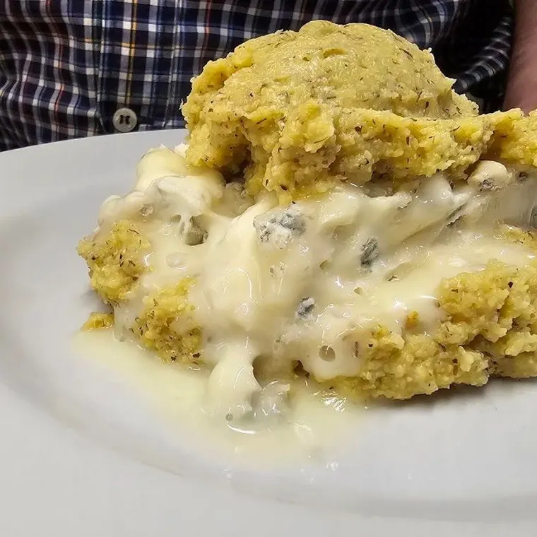
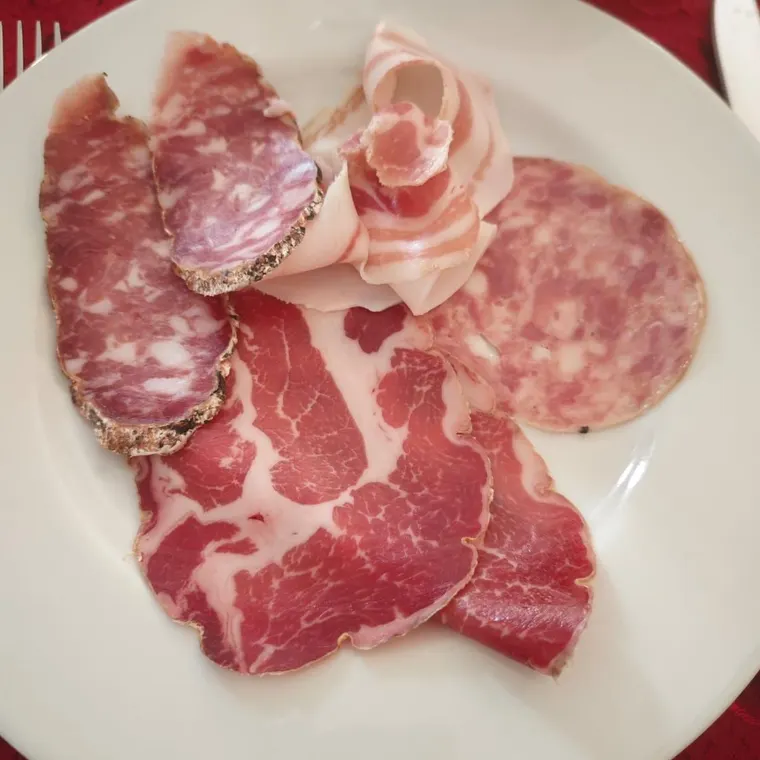
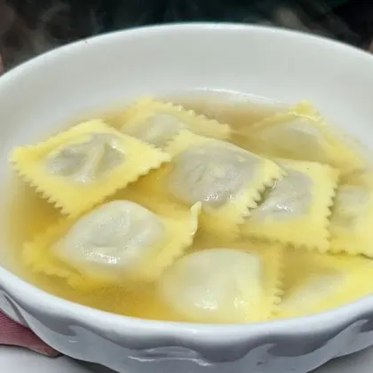
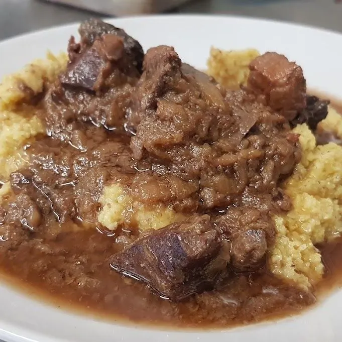
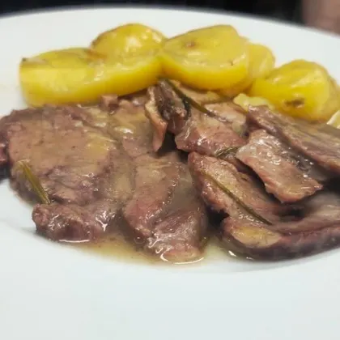
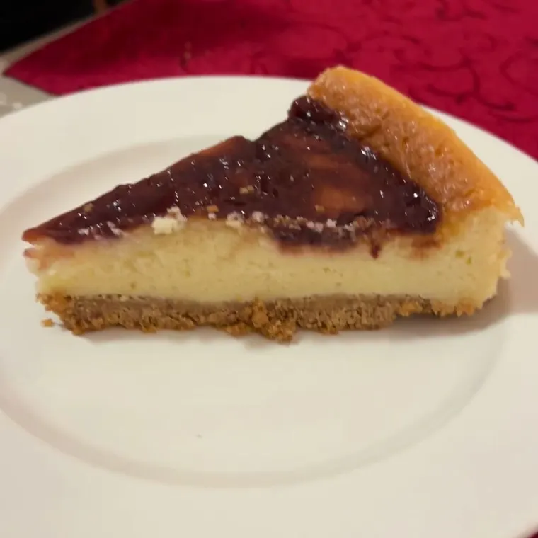

Polenta e gorgonzola
Il piatto che chiedono tutti.
Sito dimostrativo
 Prenota
Prenota
Piatti sostanziosi, porzioni vere. Ecco cosa arriva più spesso sulle tovaglie a cuori.

Il piatto che chiedono tutti.

Per cominciare come si deve.

Quando fuori fa freddo.

Cottura lunga, sugo abbondante.

Con le patate, come a casa.

Una fetta per chiudere.
Il menu cambia con la stagione e con la giornata: per sapere cosa c’è oggi, e per allergie o intolleranze, chiamaci.
Cucina di casa, sostanziosa: polenta con il gorgonzola o con lo spezzatino, salumi, ravioli, carni cotte a lungo e torte.
Nella bella stagione ci sono i tavoli all’aperto, davanti alla casetta.